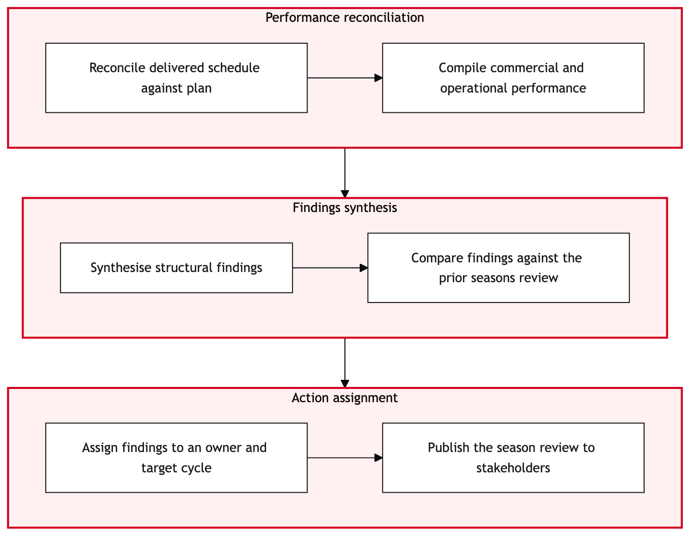

Updated 2026-08-20
Network Post Implementation Review
Process flow
Click to zoom

Process steps
▼
Phase 1 — Preparation
4 steps
| Step | Activity | Role | System | Input | Output | KPI | Dec | Exc | Pain point |
|---|---|---|---|---|---|---|---|---|---|
| 1.1 | Initiate Review Process | YYZ Operations Control Duty Manager | Lufthansa Systems NetLineB | Network change implementation details | Pre-review checklist | 24-hour review initiation time | N | N | Late initiation can delay overall network planning. |
| 1.2 | Verify Implementation Status | Network Planning Analyst | Lufthansa Systems NetLine/PlanU | Pre-review checklist | Verification report | Within 48 hours of implementation | Y | N | Miscommunication can lead to incomplete verification. |
| 1.3 | Request Additional Verification Details | Network Planning Analyst | Lufthansa Systems NetLine/PlanU | Verification report | Updated verification details | Within 24 hours of request | N | Y | Delayed updates can cause further delays. |
| 1.4 | Re-verify Implementation | Network Planning Analyst | Lufthansa Systems NetLine/PlanU | Updated verification details | Final verification report | Within 24 hours of receiving updated details | N | N | Multiple verifications increase the time-to-market. |
▼
Phase 2 — Data Collection
3 steps
| Step | Activity | Role | System | Input | Output | KPI | Dec | Exc | Pain point |
|---|---|---|---|---|---|---|---|---|---|
| 2.1 | Collect Performance Metrics | Network Operations Analyst | Lufthansa Systems NetLine/PlanU | Final verification report | Performance metrics report | Within 7 days of implementation | N | Y | Inaccurate data can lead to flawed analysis. |
| 2.2 | Request Data Correction | Network Operations Analyst | Lufthansa Systems NetLine/PlanU | Performance metrics report | Corrected performance metrics | Within 48 hours of request | N | Y | Further delays in data correction can impact review timelines. |
| 2.3 | Re-collect Performance Metrics | Network Operations Analyst | Lufthansa Systems NetLine/PlanU | Corrected performance metrics | Final performance metrics report | Within 7 days of corrected data | N | N | Continuous data collection ensures accurate review. |
▼
Phase 3 — Analysis
3 steps
| Step | Activity | Role | System | Input | Output | KPI | Dec | Exc | Pain point |
|---|---|---|---|---|---|---|---|---|---|
| 3.1 | Analyze Performance Metrics | Network Performance Analyst | Lufthansa Systems NetLine/PlanU | Final performance metrics report | Analysis report | Within 5 days of final performance metrics | Y | N | Complex analysis can consume significant time. |
| 3.2 | Request Additional Data Points | Network Performance Analyst | Lufthansa Systems NetLine/PlanU | Analysis report | Additional data points | Within 48 hours of request | N | Y | Insufficient data can lead to inaccurate analysis. |
| 3.3 | Re-analyze with Additional Data | Network Performance Analyst | Lufthansa Systems NetLine/PlanU | Additional data points | Updated analysis report | Within 5 days of receiving additional data | N | N | Continuous re-analysis ensures accurate conclusions. |
▼
Phase 4 — Review Meeting
3 steps
| Step | Activity | Role | System | Input | Output | KPI | Dec | Exc | Pain point |
|---|---|---|---|---|---|---|---|---|---|
| 4.1 | Conduct Review Meeting | Network Planning Manager | Lufthansa Systems NetLine/PlanU | Updated analysis report | Meeting minutes | Within 3 days of updated analysis | Y | N | Delayed meetings can impact decision-making timelines. |
| 4.2 | Request Clarifications or Adjustments | Network Planning Manager | Lufthansa Systems NetLine/PlanU | Meeting minutes | Clarified points and adjustments | Within 24 hours of request | N | Y | Further clarifications can delay the process. |
| 4.3 | Re-conduct Review Meeting | Network Planning Manager | Lufthansa Systems NetLine/PlanU | Clarified points and adjustments | Final meeting minutes | Within 3 days of receiving clarifications | N | N | Continuous meetings ensure thorough review. |
▼
Phase 5 — Documentation
3 steps
| Step | Activity | Role | System | Input | Output | KPI | Dec | Exc | Pain point |
|---|---|---|---|---|---|---|---|---|---|
| 5.1 | Document Review Findings | Network Planning Documenter | Lufthansa Systems NetLine/PlanU | Final meeting minutes | Review findings document | Within 4 days of final meeting | Y | N | Delays in documentation can impact stakeholder communication. |
| 5.2 | Request Additional Information for Documentation | Network Planning Documenter | Lufthansa Systems NetLine/PlanU | Review findings document | Additional information | Within 24 hours of request | N | Y | Further requests can delay the documentation process. |
| 5.3 | Re-document with Additional Information | Network Planning Documenter | Lufthansa Systems NetLine/PlanU | Additional information | Final review findings document | Within 4 days of receiving additional information | N | N | Continuous documentation ensures accurate reporting. |
▼
Phase 6 — Feedback Loop
3 steps
| Step | Activity | Role | System | Input | Output | KPI | Dec | Exc | Pain point |
|---|---|---|---|---|---|---|---|---|---|
| 6.1 | Distribute Review Findings | Network Planning Coordinator | Lufthansa Systems NetLine/PlanU | Final review findings document | Distribution list | Within 2 days of final document | Y | N | Delayed distribution can impact stakeholder action. |
| 6.2 | Request Recipients to Acknowledge Receipt | Network Planning Coordinator | Lufthansa Systems NetLine/PlanU | Distribution list | Acknowledgment receipts | Within 24 hours of distribution | N | Y | Non-acknowledgment can delay follow-up actions. |
| 6.3 | Re-distribute with Follow-Up | Network Planning Coordinator | Lufthansa Systems NetLine/PlanU | Acknowledgment receipts | Final distribution list | Within 2 days of follow-up | N | N | Continuous follow-ups ensure effective communication. |
Swim lanes
YYZ Operations Control Duty Manager1.1
Network Planning Analyst1.2 1.3 1.4
Network Operations Analyst2.1 2.2 2.3
Network Performance Analyst3.1 3.2 3.3
Network Planning Manager4.1 4.2 4.3
Network Planning Documenter5.1 5.2 5.3
Network Planning Coordinator6.1 6.2 6.3
Systems touched
Lufthansa Systems NetLineBLufthansa Systems NetLine/PlanU
Key performance indicators
- Review initiation within 24 hours
- Verification completion within 7 days
- Performance metrics collection within 14 days
- Analysis completed within 10 days
- Documentation finalized within 6 days
Risks and control points
- Inaccurate data leading to flawed analysis
- Delayed data correction causing review delays
- No consensus in review meetings leading to prolonged discussions
- Incomplete documentation resulting in delayed reporting
- Non-acknowledgment of distributed findings impacting follow-up actions
Air Canada Process Wiki — process and systems reference compiled from public sources
for IT Application Management and User Support pre-sales discovery.
Built 2026-08-21. Every system carries an evidence tier: tier C is an industry pattern and tier U is an open
question, and neither should be asserted as fact about Air Canada without confirmation in discovery.
Not affiliated with or endorsed by Air Canada. Air Canada, Aeroplan and Altitude are trademarks of Air Canada.